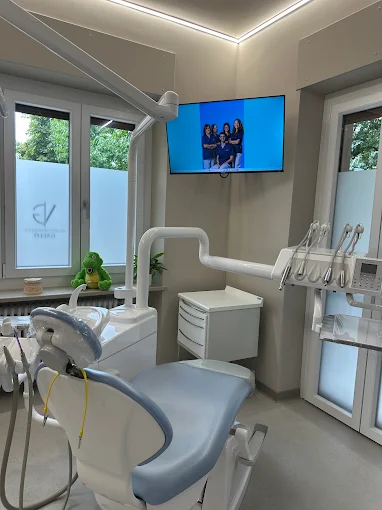
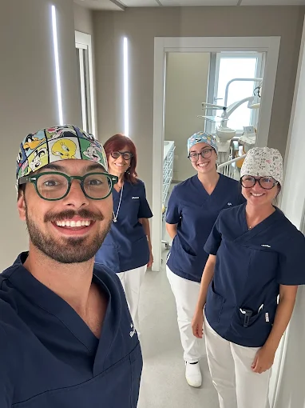

I.
Prevenzione e igiene
Controlli periodici e igiene professionale per accompagnare la salute di denti e gengive nel tempo, individuando con anticipo ogni necessità.
Lo Studio Dentistico Gallo continua a Saluzzo una storia di cura e fiducia, in una nuova sede pensata per un'esperienza di cura attenta e personale.
Scopri lo studio ↓«Non è soltanto uno studio. È la continuità di una cura di famiglia, fatta di ascolto.»
Lo Studio Dentistico Gallo è una realtà legata alla famiglia Gallo e al territorio di Saluzzo, dove da decenni accompagna due generazioni di pazienti. Nel 2026, il Dott. Vittorio Gallo ha avviato un nuovo percorso professionale indipendente.
La nuova sede di Corso Roma 15 è la casa di questo nuovo capitolo: ambienti sereni, tempi senza fretta e un rapporto diretto con chi ti segue, all'insegna di esperienza, evoluzione e attenzione alla persona.
Un breve tour della nuova sede in Corso Roma 15.

Controlli periodici e igiene professionale per accompagnare la salute di denti e gengive nel tempo, individuando con anticipo ogni necessità.

Cura delle carie e ripristino del dente naturale con tecniche conservative, per conservare quanto più possibile ciò che è sano.
Trattamenti di allineamento dentale per bambini, ragazzi e adulti, con attenzione al risultato funzionale e all'armonia del sorriso.

Un approccio delicato per i più piccoli, perché imparino a prendersi cura della bocca senza timore, in un ambiente sereno.
Il Dott. Gallo
Le parole dei nostri pazienti
«Lo studio Gallo ha un ambiente accogliente che ti fa sentire a proprio agio. Lo staff si è sempre dimostrato molto professionale, gentile e disponibile.»
«Studio accogliente, il servizio è assolutamente ottimo. I dottori sono preparati e hanno un approccio tranquillo e gentile. La spiegazione della terapia e del piano di cura sono accurati ed esaustivi.»
Ti aspettiamo nella nuova sede di Corso Roma 15, Saluzzo, per conoscerci senza impegno.
+39 0175 46366Corso Roma 15, Saluzzo (CN) · seguici su @studio.dentistico.gallo